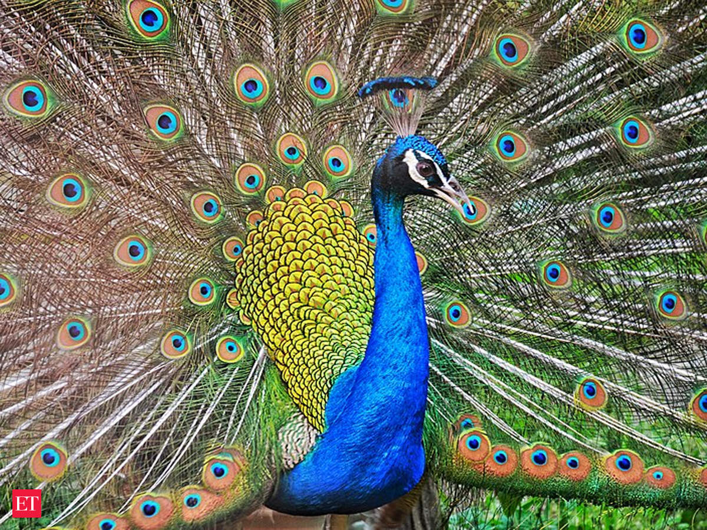
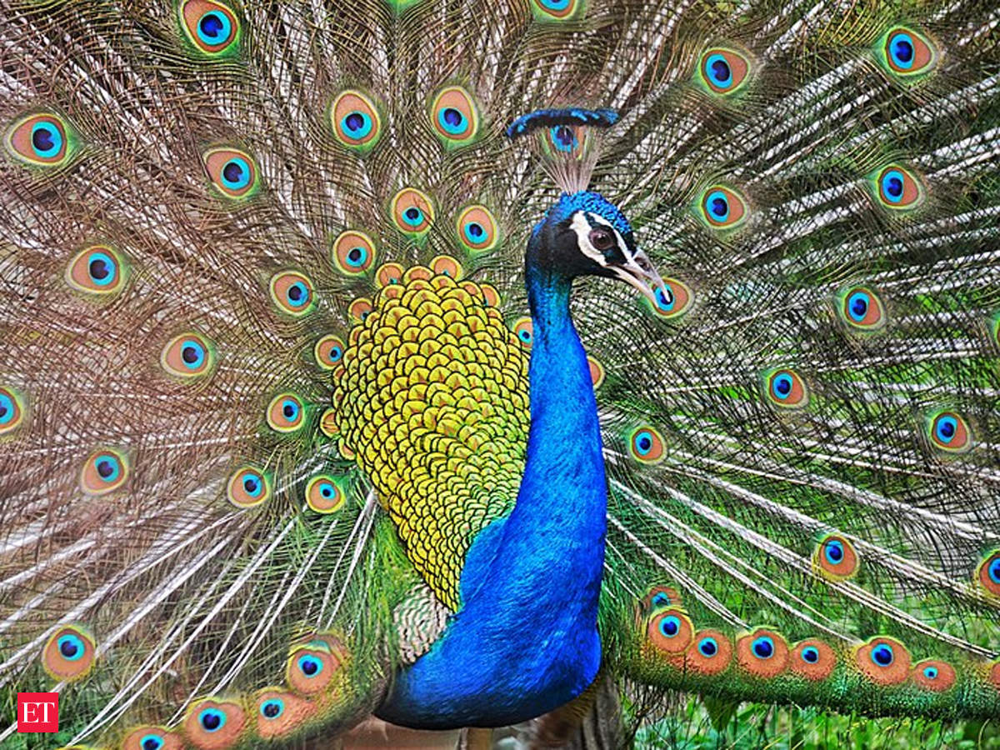

WELCOME
Birdwatching, or birding, is the observing of birds, either as a recreational activity or as a form of citizen science. A birdwatcher may observe by using their naked eye, by using a visual enhancement device like binoculars or a telescope, by listening for bird sounds,[1][2] or by watching public webcams. Birdwatching often involves a significant auditory component, as many bird species are more easily detected and identified by ear than by eye. Most birdwatchers pursue this activity for recreational or social reasons, unlike ornithologists, who engage in the study of birds using formal scientific methods.
Twitching is a British term used to mean "the pursuit of a previously located rare bird." In North America, it is more often called chasing. The term twitcher, sometimes misapplied as a synonym for birder, is reserved for those who travel long distances to see a rare bird that would then be ticked, or counted on a list.[2][5] The term originated in the 1950s, when it was used for the nervous behaviour of Howard Medhurst, a British birdwatcher.[6] Prior terms for those who chased rarities were pot-hunter, tally-hunter, or tick-hunter. The main goal of twitching is often to accumulate species on one's lists. Some birders engage in competition to accumulate the longest species list. The act of the pursuit itself is referred to as a twitch or a chase. A rare bird that stays long enough for people to see it is twitchable or chaseable.[2][5]
FAVOURITE PHOTOS


 
